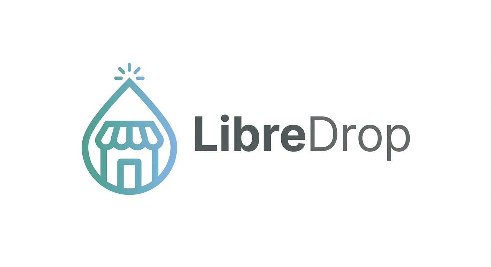

Misión
Devolver el control de la tecnología a las personas que la usan, con software libre, sencillo y accesible.
Laboratorio independiente · Open Source · Hecho en Guatemala
LibreLabs es un pequeño laboratorio de software: crea herramientas Open Source y, cuando tiene sentido, las ofrece administradas en la nube. Sin humo ni planes complicados.
«Un pequeño negocio para todos.»
Proyecto principal: LibreDrop · tiendas online simples · AGPLv3
Qué es LibreLabs
Construimos herramientas Open Source enfocadas en la accesibilidad, la autonomía y los pequeños negocios: tecnología sencilla, software útil y una comunidad alrededor.
Devolver el control de la tecnología a las personas que la usan, con software libre, sencillo y accesible.
Un ecosistema de herramientas abiertas que permita a personas y pequeños negocios usar tecnología sin depender de plataformas cerradas.
Publicar más proyectos, cerrar el roadmap de LibreDrop y sumar una comunidad que use, reporte y contribuya.
Proyecto principal
Plataforma Open Source (AGPLv3) para crear tiendas online simples: publicá tus productos y recibí pedidos por WhatsApp, sin comisiones.

LibreLabs Cloud
LibreLabs construye software libre. LibreLabs Cloud es la otra mitad: la capa de servicios administrados. Es el mismo software Open Source, ya montado y mantenido por el equipo, para quien prefiere no encargarse del servidor.
| LibreLabs · Open Source | LibreLabs Cloud | |
|---|---|---|
| Qué es | El laboratorio que crea el software libre. | La capa de servicios administrados de LibreLabs. |
| Qué ofrece | Proyectos Open Source (AGPLv3) y su código. | El mismo software, ya instalado y mantenido. |
| Infraestructura | La administrás vos (self-hosting). | La administra LibreLabs por vos. |
| Precio | El software es gratis. | Servicio de pago · LibreDrop Cloud, Q100/mes. |
| Control | Total: estudiás, modificás y ejecutás donde quieras. | Tus datos siguen siendo tuyos, con el equipo al cuidado. |
| Ejemplo hoy | LibreDrop | LibreDrop Cloud |
Open Source
Creemos en el software libre: podés estudiarlo, modificarlo, usarlo y contribuir. La transparencia no es un extra, es parte de cómo trabajamos.
LibreDrop se publica bajo la GNU Affero General Public License v3: podés usarla, estudiarla y modificarla. Si ofrecés el software como servicio, el código —incluidas tus modificaciones— debe seguir disponible.
Leer la licencia de LibreDropContacto
Explorá LibreDrop o escribinos y te ayudamos a empezar, ya sea con el proyecto Open Source o con LibreDrop Cloud.